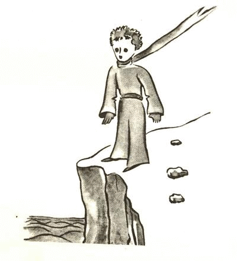
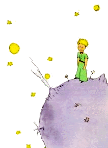

小王子 The Little Prince
第3章
第3章
很久以后，我才弄明白他是从哪儿来的。
这个小王子，对我提了好多问题，而对我的问题总像没听见似的。我是从他偶尔漏出来的那些话里，一点一点知道这一切的。比如，他第一次瞧见我的飞机时（我没画我的飞机，对我来说，这样的画实在太复杂了），就问我：
“这是什么东西？”
“这不是什么东西，它会飞。这是一架飞机，是我的飞机。”
我自豪地讲给他听，我在天上飞。他听了就大声说：
“怎么！你是天上掉下来的？”
“是的，”我谦虚地说。
“喔！真有趣……”
小王子发出一阵清脆的笑声，这下可把我惹恼了。我不喜欢别人拿我的不幸逗趣儿。接着他又说：
“这么说，你也是从天上来的！你从哪个星球来？”
我脑子里闪过一个念头，他的降临之谜好像有了线索，我突如其来地发问：
“那你是从别的星球来的啰？”
可是他没有回答。他看着我的飞机，轻轻地点了点头：
“是啊，就靠它，你来的地方不会太远……”
说着，他出神地遐想了很久。而后，从袋里拿出我画的绵羊，全神贯注地凝望着这宝贝。
你想想看，这个跟“别的星球”有关，说了一半打住的话头，会让我多么惊讶啊。我竭力想多知道一些：
“你从哪儿来，我的小家伙？‘我那儿’是哪儿？你要把我画的绵羊带到哪儿去？”
他若有所思地沉默了一会儿，然后开口对我说：
“你给了我这个箱子，这就好了，晚上可以给它当屋子。”
“当然。要是你乖，我还会给你一根绳子，白天可以把它拴住。木桩也有。”
这个提议好像使小王子很不以为然：
“拴住？真是怪念头！”
“可要是你不把它拴住，它就会到处跑，还会跑丢了……”
我的朋友又格格地笑了起来：
“你叫它往哪儿跑呀？”
“到处跑。笔直往前……”
这时，小王子一本正经地说：
“那也没关系，我那儿就一丁点儿大！”
然后，他又说了一句，语气中仿佛有点儿忧郁：
“就是笔直往前跑，也跑不了多远……”